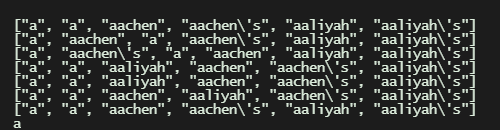

Created by Aidan Valva, Rafid Ahmed, Onik Hoque, and Shivangi Gupta.

Our group created two algorithms: one in Swift and one in Python. Both utilize QuickSort, although the Python algorithm utilizes Lomuto's partition and chooses the first element as the pivot whilst the Swift algorithm uses Hoare's partition and uses the last element as the pivot, after selecting it from the median of the first, middle, and last index. The python algorithm runs at O(n*logn), but for reasons that require further testing we have concluded that the Swift algorithm runs at O(n^3). Above is an flowchart detailing the Python algorithm.
Source code can be found here
Link to algorithm tests can be found here
Link to algorithm test summary can be found here
Sorting algorithms may not seem like a deep topic of discussion, but the topic is filled with nuances and it reaches deeper than one may believe. In this project, I logged the data from bubble sort, insertion sort, selection sort, and my own algorithm above againt various text files to see how fast they could be sorted. I tested each for best, worst, and average case scenarios using pre-ordered, reverse-ordered, and random order text files, respectively.
All links can be found here, test files used for testing are included with the source code of each algorithm:

We begin by testing what is deemed by many to be the simplest sorting algorithm: Bubble Sort. This algorithm works by iterating through each elemnent of the array, starting at index 1. If the element in the previous index is bigger, then the two elements swap. This goes on through each element and the array is iterated through until it reaches the end without making any changes from the start. Inputting an ordered list means that the array is simply iterated through once, making for a linear looking graph, which tapers off at the end only because values in the x-axis aren't spaced proportionally. However, random and reverse-ordered input result in drastically different results than ordered input. They become quadratic curves, and dwarf the runtimes of the ordered list. Reverse ordered requires more operations (assuming that a perfectly reversed input isn't generated randomly) than does randomly generated input, accounting for the higher runtimes for reverse-ordered input.

Selection Sort begins by iterating through the entire array, and swapping the least value with the element at index 0. Having placed the correct object at index 0, the algorithm can continue scanning for the smallest element, this time from index 1, and swapping that with index 1 after the array has been transversed. This is continued for the whole array. It's hard to miss the fact that best case (ordered), worst case (reverse-ordered), and average case scenario(ordered) fall right on top of each other, with very little difference in time. This is because unlike bubble sort, which transverses through the whole array for each pass, selection sort doesn't realize whether the array is sorted or not until a section of the array has been transversed for every element. This means that the performance with ordered matches that of random input and reverse-order input. The best case, worst case, and average case scenarios all have similar curves, mirroring that of a quadratic; this makes sense considering that that in all three cases the time complexity of selection sort is O(n*2).

Insertion Sort has a graph very similar to that of Bubble Sort, with run time with ordered input running much faster than random input and reversed-order input. It is very similar to Bubble Sort, but instead of swapping and moving on, elements are continuously checked to see if they are less than the value of the previous element, and keep being swapped if true. By the time it reaches the end of the array, it is sorted, unlike Bubble Sort which often has to traverse the array multiple times. This ensures that in the best case scenario the array is traversed through only once without swaps being made, giving the ordered data a linear appearance and the reverse-ordered and random data quadratic appearances, corresponding to their respective time complexities of O(n), O(n^2), and O(n^2).

This algorithm, based on quicksort, has very strange behavior compared to the other graphs. The algorithm works by partitioning off part of the array, and assigning a pivot value. the array is sorted so that everything to the left of the array is less than the pivot and everything to the right is greater than it. The values above and below the pivot are then recursively fed into the same function until the array has been sorted. What my algorithm adds, is an attempt to solve the issue of inefficient pivots that create one large partition and one small partition. To combat this, I implented a system where looking at the first, middle, and last element of the partition, the element with the median value is chosen to be the pivot. This optimizes the chance of the selection of a good pivot. In contrast to the other sorts, here the random input seems to operate linearly or logarithmicly, while the reverse-ordered and ordered seem to oprtate quadratically. This doesn't make sense considering the nature of the algorithm. Thus, my algorithm or the recording of my data must have some error or inefficient compenent causing this to happen. One possible factor could be the fact that in my algorithm, rather than using the built in Swift string comparisons, I used my own lengthy functions, which may or may not have the same rules used by the sort function that created the ordered list. Thus, there may still be swaps and other operations occuring even in the ordered list. Aditionally, through running ordered input and printing the array to console after each partition, I was able to find a very strange occurrence, shown here:
Here, you can see that the algorithm takes the ordered text, scrambles it, then reorganizes it and returns it. Why this happens, I cannot answer, but I suspect that it may be linked to the ridiculously long time ordered input takes to be sorted. Despite the promised efficiency of the pivot selection medthod I use in my algorithm, it is slower than a plain quicksort algorithm. This can boil down to a few things: the discrepancy in sorting ordered text as shown in the image above, the use of my own string comparison system that assigns a series of number values to words rather tahn the default Swift string comparison system, and the possibility that choosing a better pivot takes more time than it does to simply move along with a mediocre pivot. Whether it's one of these issues or all of them, further testing will be needed on my part to determine how to tackle these obstacles.
Looking at these algorithms, it is clear that there are factors that contribute to the performance of some and others that detract from it. For example, compared to the other algorithms, selection sort has horrendous performance with ordered input. This is because of the fact that there is no check to see if the algorithm is already sorted, and to sort even one misplaced item the entire algorithm will have to play out. Thus, selection sort is the only algorithm among these four to have a best case scenario time complexity of O(n^2). A factor that makes my algorithm stand out is its stellar performance under randomized input, with a time complexity of O(n(log(n)). I believe that is because of it's recursiveness, something that also sets it apart from the other sorts. Being recursive allows it to stop right when it is sorted, and use the same algorithm for smaller and smaller subsections of the array, speeding up the sorting process considerably. Whether the algorithm is stable (maintains the input order of elements with the same value) seems to be insignificant to performace, as the low performance bubble sort and my higher performance alphabetical sort are both unstable but have wildly different performances. Thus, I believe that the best ways to create a fast algorithm are to implement recursiveness and to allow the algorithm to stop as soon as it is sorted, without requiring any extra time delay or effort. Additionally, ssubdividing the array into smaller pieces and putting those pieces together takes less time, and algorithms that use this strategy are markedly faster than their counterparts.
Digital Portfolio can be found on GitHub here.